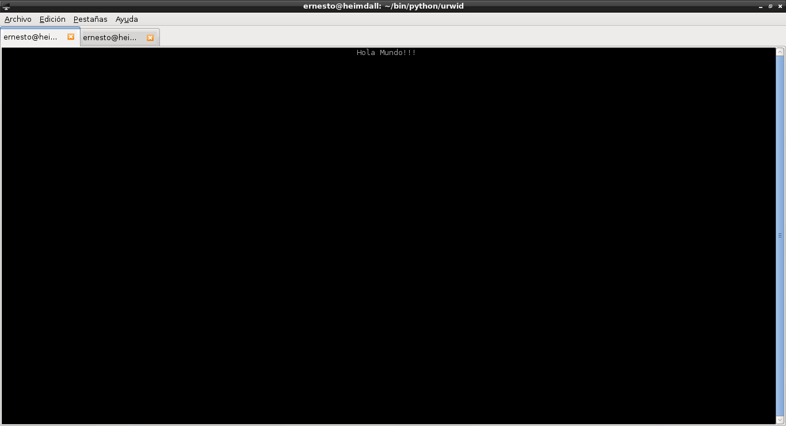

Urwid librería ncurses para hacer aplicaciones de texto para la consola (parte 1).
Publicado el dom 17 agosto 2014 en Tutorial Python y Linux • 1 min de lectura
Este artículo es el inicio de una serie de artículos sobre desarrollo de aplicaciones de texto para la consola.
Existe en python la librería ncurses pero si se quiere una librería más completa se tiene a urwid.
Para instalarla en Debian por apt-get:
apt-get install python-urwid python3-urwid
O con pip:
pip install urwid
En este primer artículo simplemente se hará el típico hola mundo.
#!/usr/bin/env python
#Se importa la libreria urwid
import urwid
#Se define el texto a publicar
txt = urwid.Text(u"Hola Mundo!!! ", align='center')
#Se define el lugar donde se publica el texto
fill = urwid.Filler(txt, 'top')
#Se define una funcion donde si se presiona la tecla q o Q se sale del programa.
def exit(input):
if input in ('q', 'Q'):
raise urwid.ExitMainLoop()
#Se define un lazo donde se le pasa fill y la funcion de salida
loop = urwid.MainLoop(fill, unhandled_input=exit)
#Se ejecuta el lazo
loop.run()
Al ejecutar el script se tiene lo que muestra la siguiente figura:

Al presionar la tecla q se sale del programa.
¡Haz tu donativo! Si te gustó el artículo puedes realizar un donativo con Bitcoin (BTC) usando la billetera digital de tu preferencia a la siguiente dirección: 17MtNybhdkA9GV3UNS6BTwPcuhjXoPrSzV
O Escaneando el código QR desde la billetera: